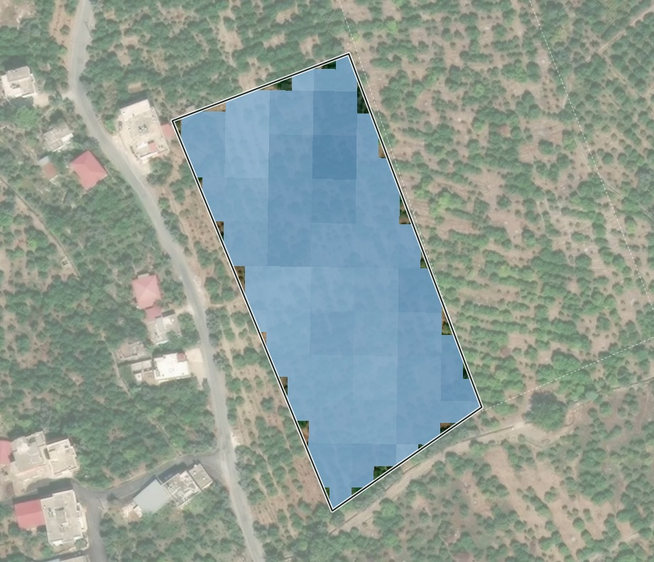

BahçeLab
Bahçeler
Asistan
İşlerim
Hizmetler
Pazar
Ara veya sor — “kuzey köşe nasıl?”
⌘K
Bildirimler
TK
jlnnlk
Limon · 15,1 da · Erdemli, Mersin
⌄
Durum
Analiz
Su
Hava
Günlük
Rapor
Saha Defteri ↗

soğuk hava ile aynı hava verisi kullanılıyor (aynı 9 km hücre)
Yaprak suyu
Sentinel-2 · 20 m
⌄
‹
9 Eki
20 gün önce
›
⋯
Yaprak suyu
0
ortanca 0,25
0,6
25 m
© Mapbox © OpenStreetMap © Maxar